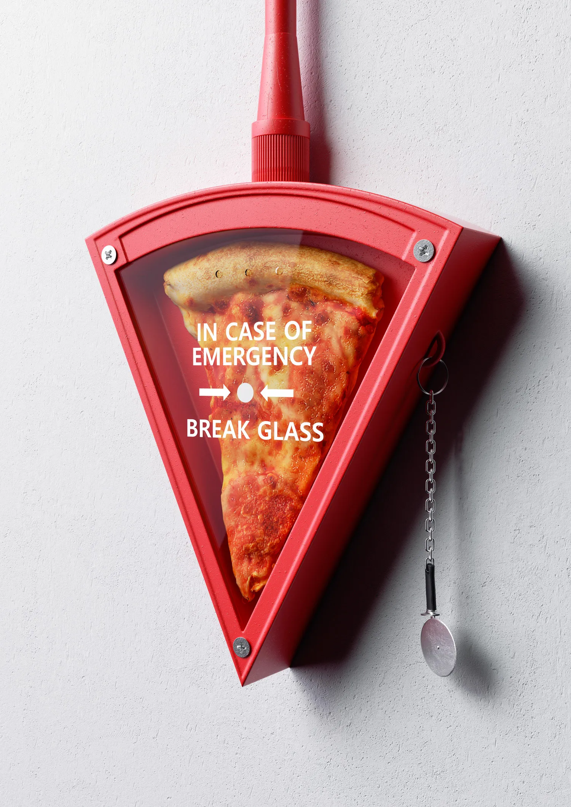

New York Style
Pizza

Pizza Dough:
- 2.5 cups plus 1.75 tablespoons (617g) lukewarm water
- 1.5 tablespoons (14g) instant yeast
- 6 cups plus 1/3 cup (950g) all-purpose flour
- 3.25 teaspoons (19g) fine sea salt
- 2 tablespoons (25g) granulated sugar
- Olive oil for dough
Sauce & Assembly:
- 2 tablespoons (24g) extra virgin olive oil
- 3.5 tablespoons (49g) unsalted butter
- 4 cloves garlic, sliced
- 1 teaspoon (2g) red pepper flakes
- 28oz (794g) can of crushed tomatoes
- 1 onion, sliced in half, leaving the root attached
- 1 tablespoon (13g) granulated sugar
- 1.5 teaspoons (2g) dried oregano
- 1 teaspoon (1g) dried thyme
- Salt & Pepper to taste
- 1.5 lbs (680g) low moisture mozzarella, coarse grated
Instructions:
Pizza Dough:
- In a container, add water, heat up to 95F, whisk in yeast and let it sit for 5 min. To a large bowl, add flour, salt, and sugar; mix that until incorporated.
- Add your water with yeast to your flour and mix by hand until you get a relatively smooth dough, about 4 min. Next, shape your dough into a ball, generously grease a large bowl with olive oil, and place your dough; cover with greased plastic wrap and rise in the fridge overnight.
- Punch down your dough, place it onto a lightly floured work surface, divide it into 300 grams pieces, roll each piece into a light ball, and put it into a lightly floured proofing box or a baking sheet (leaving room in between each other). Cover with a lid or greased plastic wrap and let it proof for 2 to 3 hours at room temperature or until doubled in size.
Sauce & Assembly
- Place a pizza stone in the oven and preheat to max temperature for one hour before baking, or set up your pizza oven to 650F.
- In a medium saucepan over medium heat, add olive oil, garlic, butter, and cook, stirring occasionally, until the garlic turns into a light golden brown.
- Then add pepper flakes and saute for 20 seconds, followed by tomatoes, sugar, oregano, and thyme. Stir together, season with salt, add onion, bring it to a simmer, and cook that down, stirring occasionally, for 20 minutes.
- Remove the onion, adjust the salt levels and cool down completely.
- Assembly.- Place one of your dough rounds on a lightly floured work surface and generously flour your dough. Next, begin punching out a very thin perimeter in the dough, trip the dough over your fists, and shimmer around the entire perimeter of the dough, lightly stretching it as you go until you get a pizza round, about 2 -3 inches wide.
- Lay it back down, place a couple of tablespoons of your sauce in the center, and spread it around in a circular motion, leaving a slight edge.
- Top with a generous amount of freshly grated mozzarella and place in the oven for 6 to 8 minutes or in a pizza oven for 2 to 4 minutes. Repeat with the rest of your dough.